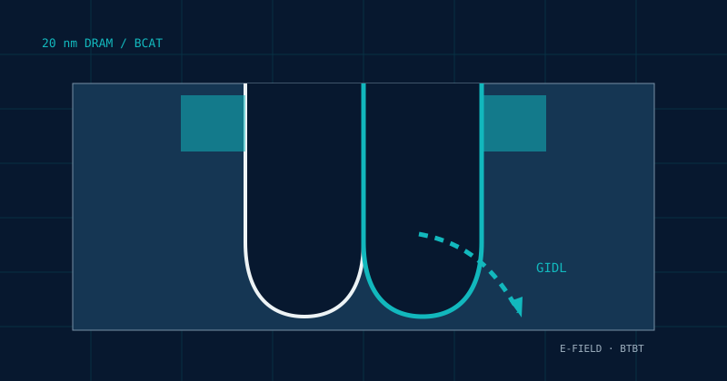

GitHub repository
진행 중인 프로젝트의 README와 자료
VIEW GITHUB REPOSITORY ↗GIDL Leakage Optimization
Trench corner의 고전계와 band-to-band tunneling으로 발생하는 GIDL 누설을 줄이기 위해 공정·소자 변수를 분석하는 장기 프로젝트입니다.

01 / OVERVIEW
20 nm급 BCAT 구조에서는 trench corner 부근의 전계 집중이 BTBT를 증가시키고 GIDL 누설 경로를 만들 수 있습니다. 본 프로젝트는 구조와 도핑 변수를 조정해 이 누설을 낮추는 방향을 찾는 것을 목표로 합니다.
02 / METHOD
BCAT 구조와 누설 분석에 사용할 모델·시뮬레이션 환경을 검증합니다.
Trench depth와 LDD/Halo 공정 변수를 변화시켜 GIDL 경향을 비교합니다.
MEB depth를 추가 변수로 두고 Cov–GIDL 상관관계를 분석할 계획입니다.
03 / MILESTONE
04 / FILES
진행 중인 프로젝트의 README와 자료
VIEW GITHUB REPOSITORY ↗BCAT 문제 정의와 연구 방향을 정리한 PDF
VIEW PRESENTATION PDF ↗